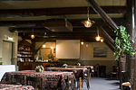

De zaal in de oude schuur
Tot 120 gasten
In de voormalige schuur van ’t Zielhoes bevindt zich een sfeervol ingerichte zaalruimte die ruimte biedt aan maximaal 120 gasten. Ideaal voor een presentatie, workshop, vergadering, feestavond, receptie of een buffet. Draadloos internet, beamer en flip-over zijn vanzelfsprekend aanwezig.